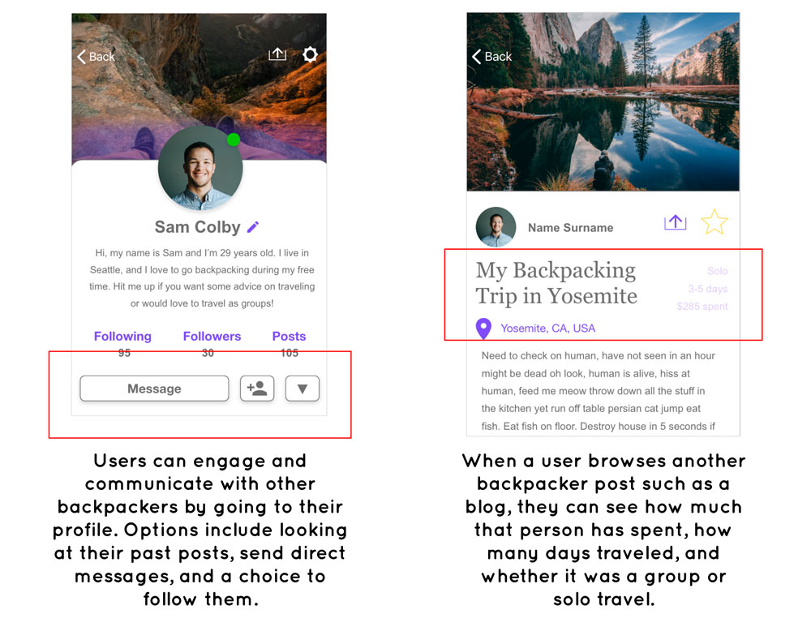
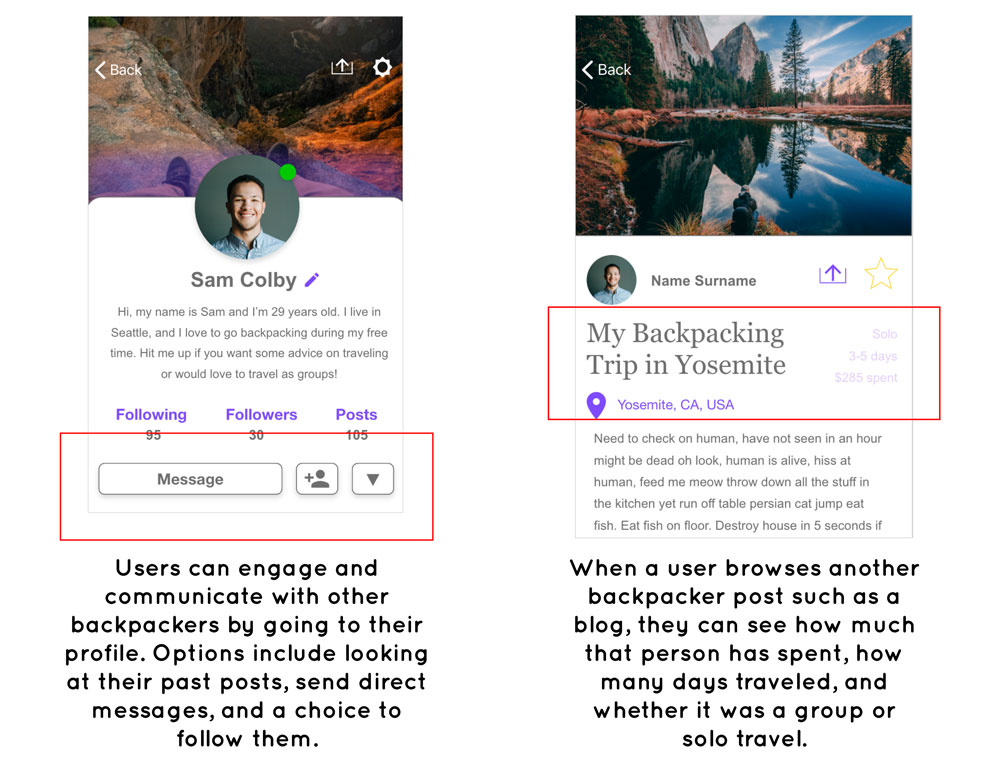

mylan le.
designer & illustrator
wayfarer.
Role: UX Designer
Task: Research, User Testing, Wireframing, Prototyping
Tools: Adobe XD, InVision, Miro
Timeline: 1.5 months
Collaborator: Mylan Le
background.
People who backpack have been surrounded by a variety of travel information whether it may be from books, online travel applications, to high-end custom travel agencies. However many have an experience that these resources are generic and lack authenticity which makes it difficult for backpackers to have a more customizable and adventurous experience.
user research.
Originally during my first round of interviews, I realized I was too broad and only focused on the general idea of how they plan their trip. I decided to dive deeper and do another round of interviews specifically about backpacking. I began by conducting around 10-12 interviews in order to figure out what behavior patterns were trending and how they plan their trip.
There was a trend on individuals who express that planning the type of activities to do according to them and their group’s interest is very important and what kind of resources they want to rely on, specifically talking to people to find out their experiences.
I put out multiple surveys (through Google Forms and Survey Monkey) with total 120 participants from different culture and background. Based on the quantitative and qualitative data, I planned to dive deep into our research to identify and understand the user’s pain point.
The surveys captured great quantitative results with some trending answers. I learned that 42.4% of users (14 people) prefer to plan their trip by discovering what other travelers have experience. I also believe that the 36.4% (12 people) that picked online blogs plays a similar role of discovering new finds that were personally posted by travel bloggers. I also discovered that 55.6% of user’s (20 people) major pain point is planning out what to do for their trip.


gathering the data.
I gathered my data and created an affinity diagram. There was alot of information held for each intervieww, so I simplified and picked out similiarities between each person. I separated the diagrams into 6 categories. Here's some key points I learned:
• When they are planning they prefer to use resources that are more personal to guide them such as talking to other or reading travel blogs.
• Budgeting and figuring out the cost for travels when traveling solo or with a group.
• Want to be able to have an organized itinerary suited for solo or group backpacking.
{kind=link}
so what's the problem then?
I have observed that backpackers find it difficult to search the plans of their particular interests through the internet, specifically travel agencies, because it does not give many unique options and many are too generic and lack authenticity. How can I provide an app that brings an immersive and customized destination for all backpackers that is shared between other people?
meet michael.
Michael is an engineer who is very spontaneous, self-driven, and ambitious. He enjoys the outdoors and spends most of his free time hiking and rock climnbing with friends. He also submits monthly travel articles of his past experiences to engage with his followers. He wants to plan a backpacking trip soon and ideally he would want to see many diverse places and absorb local culture and tastes. However, he is struggling to find a trip and would like to talk to somebody for suggestions.

competitive analysis
Worldpackers is a community based on collaboration and honest relationships that make travel more accessible to those seeking a profound cultural experience. Through an online platform, WorldPackers connect travelers - looking to exchange their skills for accommodation - with incredible hosts from all around the world. People can travel with a collaborative mindset and share valuable experiences to one another.
• Competitive Advantage: WorldPackers provides living accommodations for travelers/backpackers while being on a budget; provide articles posted by travelers so others can get a more personal insight of what they will be doing, dominate the market in South America.
• General Notes: Overall, the website and the service for WorldPackers
is very trustworthy and people rely on this company to work and travel simultaneously.
This company provides a wide range of travel experiences whether it may be teaching abroad,
learning to convert to a nomad lifestyle, or exposing to diverse cultural experience. This
company provides budget free options, personal tips posted by experiences travelers, and solo traveling.
However, many travelers have experiences times where the travel plans hosted by WorldPacker
are very disorganized especially with classes. This leads to where the travelers feels that
they aren’t making much of an impact for children.

brainstorming.
After doing a competitive analysis, I wanted to prioritize what needed to be in app, Wayfarer, by doing a prioritization matrix.
• I learned that it’s very important that the users share their experiences so that travelers can have more insight and what they will be expecting for their trip. Something to consider is a communication platform.
• I need to make sure the user experience is very friendly, simple, and clean. It can increase customer loyalty and engagement.
• I believe that when searching, ratings are very crucial for travelers. It’s very feasible in user experience and will make a big impact on decision.

storyboard.
After getting the goal down for the app, I came up with a user scenario for Michael.
TLDR: He wants to find a backpacking trip but the internet isn't giving him many options. His friend suggested an app called, Wayfarer that let's him engage with other travelers and their experiences. Feeling hopefully he downloads and at the end, he was able to find an adventurous trip. He goes on it and is very happy! :)
{kind=link}
user flow.
In order for the user to get and understand the full experience that Wayfarer has to offer, I decided to go with an onboarding phase (with three screens) before having the user jump straight into the homepage of the app. After the onboarding, the user will need to sign-up in order to communicate with other backpackers and to be able to post their experiences as well such as photos, blogs, and videos.
{kind=link}
The main goal for Michael is to find the best backpacking trip shared by another traveler. Here is the user flow for searching and browsing Wayfarer.

Not only Michael can search for trip ideas from engaging with other backpackers, he can also share his experiences as well.
{kind=link}
lo-fi prototyping & user testing
I transferred my user flow into lo-fi wireframes focusing on three tasks for the interviewees: Sign Up & Login / Onboarding, Searching for a backpacking trip, and Posting an experience. After conducting three user tests, I discovered some potential solutions to improve Wayfarer before moving onto the hi-fidelity wirframes.
• Make sure onboarding is clear, simple, and more engaging to avoid “Skip” button.
• Make the “Create Account” info boxes clickable.
• Screen needs to go back to homepage when finishing posting a blog.
• Make icons bit bigger and understandable.
• Refine the filter (Number of days) so users have a bit more options to choose
{kind=link}
{kind=link}
{kind=link}
hi-fi prototyping & testing.
After discovering issues from the lo-fi testing, I reiterated and applied them into the hi-fidelity. Wanting to make the app feeling engaging, sociable, and adventurous, I applied visuals relating to travel, backpacking, and communication.
{kind=link}
Sign-up/Login & Onboarding: Let's go back to Michael's journey. He wants to find a backpacking trip that's adventurous but adds value to his experience. He prefers to find suggestions based off other people's experiences. He downloads Wayfarer and sign-up. In order for him to understand the goal of the app, he goes through the onboarding phase which is: "Ready to Travel, Engage with Others, and Post your Experiences."

Browsing: Michael has the option to turn on location. If disabled, he can manually type in a specific location in the search bar. Once he lands on the homepage, he has the freedom to browse the newsfeed of blogs, videos, and photos from other backpackers.
• Michael wants to start a search. He can click on the search bar on top of the screen. As he types in his search, he can also filter out which is located on the top right corner. This enables him to filter out according to budget, how many days he wants to travel, and/or if he wants to see a blog, post, or video.
• Since Wayfarer is a communication platform, Michael can search and browse other backpacker's profiles. He can see their past posts, follow them, and/or send them a direct message.
• When Michael finds what he is looking for (let's say a blog he found interesting), he can choose to read it by clicking the desired blog another backpacker posted. Once there, the blog provides him with details about the backpacker's experience, how long that person traveled, and how much money was spent. This helps Michael get an idea of what the trip will look like if he were to travel based off the backpackers blog.
 

{kind=link}
Posting: The main goal for this app was to search for meaningful and valuable expereinces through other people. However, I added an additional feature where the user can also post their experience as well. Let's say Michael went on an amazing backpacking trip a month ago. He wants to share it through Wayfarer. If he is on the homepage screen, he can locate the post feature on the bottom screen where the navigation is (the + icon in the middle)
• He has a choice to post a blog, moment, photo, or video.
• Michael clicks the "Blog" button and can start typing his story. He will need to add the location of his trip so it will help other backpackers know where the trip was located.
• Michael can organize the format his story by adding in photos in between paragraphs.
• When Michael is done typing out his story, he can save it as a draft and post later, or he can post now.
• After posting, it will take him to the official screen of his blog.

Check me out for the Hi-Fi InVision Link :)
conclusion & future development.
This is a great experience for my team member and I to dive deep and get explored in UX world. There is definitely more room for improvement and iteration on Wayfarer. After the re-testing, we kept many of the user’s comments into consideration:
• When trying to search for an experience, it can be just one page with keyboard popped up instead of going to the next page for search.
• It can be hard to differentiate Moment and Blog by looking at their similar icons.
• Should probably consider is sign up necessary? Can the user first to go homepage then have an option to sign up/login?
• What they first create an account, they don’t have followers, what would be in the follower’s page then?
thank you! :)
If you have any questions/comments regarding to this case study, feel free to email/contact me!